使用cobbler批量安装操作系统(基于Centos7.x )
1.1 cobbler简介
Cobbler是一个Linux服务器安装的服务，可以通过网络启动(PXE)的方式来快速安装、重装物理服务器和虚拟机，同时还可以管理DHCP，DNS等。
Cobbler可以使用命令行方式管理，也提供了基于Web的界面管理工具(cobbler-web)，还提供了API接口，可以方便二次开发使用。
Cobbler是较早前的kickstart的升级版，优点是比较容易配置，还自带web界面比较易于管理。
Cobbler内置了一个轻量级配置管理系统，但它也支持和其它配置管理系统集成，如Puppet，暂时不支持SaltStack。
Cobbler官网http://cobbler.github.io
在使用cobbler之前需要了解kickstart的使用： http://www.cnblogs.com/clsn/p/7833333.html
1.1.1 cobbler集成的服务
PXE服务支持
DHCP服务管理
DNS服务管理(可选bind,dnsmasq)
电源管理
Kickstart服务支持
YUM仓库管理
TFTP(PXE启动时需要)
Apache(提供kickstart的安装源，并提供定制化的kickstart配置)
1.2 安装cobbler
1.2.1 环境说明
[root@Cobbler ~]# cat /etc/redhat-release CentOS Linux release 7.4.1708 (Core) [root@Cobbler ~]# uname -r 3.10.0-693.el7.x86_64 [root@Cobbler ~]# getenforce Disabled [root@Cobbler ~]# systemctl status firewalld.service ● firewalld.service - firewalld - dynamic firewall daemon Loaded: loaded (/usr/lib/systemd/system/firewalld.service; disabled; vendor preset: enabled) Active: inactive (dead) Docs: man:firewalld(1) [root@Cobbler ~]# hostname -I 10.0.0.202 172.16.1.202
yum源说明：
curl -o /etc/yum.repos.d/CentOS-Base.repo http://mirrors.aliyun.com/repo/Centos-7.repo
curl -o /etc/yum.repos.d/epel.repo http://mirrors.aliyun.com/repo/epel-7.repo
1.2.2 使用yum安装cobbler
yum -y install cobbler cobbler-web dhcp tftp-server pykickstart httpd
说明：cobbler是依赖与epel源下载
1.2.3 cobbler语法检查前先启动http与cobbler
systemctl start httpd.service
systemctl start cobblerd.service
cobbler check
1.2.4 进行语法检查
[root@Cobbler ~]# cobbler check The following are potential configuration items that you may want to fix: 1 : The 'server' field in /etc/cobbler/settings must be set to something other than localhost, or kickstarting features will not work. This should be a resolvable hostname or IP for the boot server as reachable by all machines that will use it. 2 : For PXE to be functional, the 'next_server' field in /etc/cobbler/settings must be set to something other than 127.0.0.1, and should match the IP of the boot server on the PXE network. 3 : change 'disable' to 'no' in /etc/xinetd.d/tftp 4 : Some network boot-loaders are missing from /var/lib/cobbler/loaders, you may run 'cobbler get-loaders' to download them, or, if you only want to handle x86/x86_64 netbooting, you may ensure that you have installed a *recent* version of the syslinux package installed and can ignore this message entirely. Files in this directory, should you want to support all architectures, should include pxelinux.0, menu.c32, elilo.efi, and yaboot. The 'cobbler get-loaders' command is the easiest way to resolve these requirements. 5 : enable and start rsyncd.service with systemctl 6 : debmirror package is not installed, it will be required to manage debian deployments and repositories 7 : The default password used by the sample templates for newly installed machines (default_password_crypted in /etc/cobbler/settings) is still set to 'cobbler' and should be changed, try: "openssl passwd -1 -salt 'random-phrase-here' 'your-password-here'" to generate new one 8 : fencing tools were not found, and are required to use the (optional) power management features. install cman or fence-agents to use them Restart cobblerd and then run 'cobbler sync' to apply changes.
1.2.5 解决当中的报错
命令集
sed -i 's/server: 127.0.0.1/server: 172.16.1.202/' /etc/cobbler/settings sed -i 's/next_server: 127.0.0.1/next_server: 172.16.1.202/' /etc/cobbler/settings sed -i 's/manage_dhcp: 0/manage_dhcp: 1/' /etc/cobbler/settings sed -i 's/pxe_just_once: 0/pxe_just_once: 1/' /etc/cobbler/settings sed -ri "/default_password_crypted/s#(.*: ).*#\1\"`openssl passwd -1 -salt 'oldboy' '123456'`\"#" /etc/cobbler/settings sed -i 's#yes#no#' /etc/xinetd.d/tftp systemctl start rsyncd systemctl enable rsyncd systemctl enable tftp.socket systemctl start tftp.socket systemctl restart cobblerd.service sed -i.ori 's#192.168.1#172.16.1#g;22d;23d' /etc/cobbler/dhcp.template cobbler sync
详解
解决1、2
cp /etc/cobbler/settings{,.ori} sed -i 's/server: 127.0.0.1/server: 172.16.1.202/' /etc/cobbler/settings sed -i 's/next_server: 127.0.0.1/next_server: 172.16.1.202/' /etc/cobbler/settings
问题3
sed 's#yes#no#g' /etc/xinetd.d/tftp -i
4下载包所需的软件包
[root@Cobbler ~]# cobbler get-loaders [root@Cobbler ~]# ls /var/lib/cobbler/loaders COPYING.elilo elilo-ia64.efi menu.c32 yaboot COPYING.syslinux grub-x86_64.efi pxelinux.0 COPYING.yaboot grub-x86.efi README
5启动rsync服务
[root@Cobbler ~]# systemctl start rsyncd.service [root@Cobbler ~]# systemctl enable rsyncd.service
6 debian相关无需修改
7、修改安装完成后的root密码
openssl passwd -1 -salt 'random-phrase-here' 'your-password-here' random-phrase-here 随机字符串 your-password-here 密码
示例
[root@Cobbler ~]# openssl passwd -1 -salt 'CLSN' '123456' $1$CLSN$LpJk4x1cplibx3q/O4O/K/
管理dhcp
sed -i 's/manage_dhcp: 0/manage_dhcp: 1/' /etc/cobbler/settings
防止重装
sed -i 's/pxe_just_once: 0/pxe_just_once: 1/' /etc/cobbler/settings
修改dhcp模板
sed -i.ori 's#192.168.1#172.16.1#g;22d;23d' /etc/cobbler/dhcp.template
cobbler组配置文件位置
/etc/cobbler/settings
注意：修改完成之后要使用cobbler sync 进行同步，否则不生效。
1.2.6 修改之后
再次检查语法：
[root@Cobbler ~]# cobbler check The following are potential configuration items that you may want to fix: 1 : debmirror package is not installed, it will be required to manage debian deployments and repositories 2 : fencing tools were not found, and are required to use the (optional) power management features. install cman or fence-agents to use them Restart cobblerd and then run 'cobbler sync' to apply changes.
重启所有服务
systemctl restart httpd.service
systemctl restart cobblerd.service
systemctl restart dhcpd.service
systemctl restart rsyncd.service
systemctl restart tftp.socket
到此cobbler就安装完成，下面进行web界面的操作。
1.3 cobbler的web及界面操作
浏览器访问https://10.0.0.202/cobbler_web
注意CentOS7中cobbler只支持https访问。
账号密码默认均为cobbler
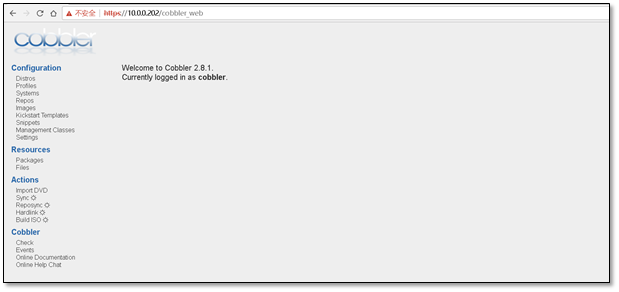
1.3.1 操作说明--导入镜像
1）在虚拟机上添加上镜像
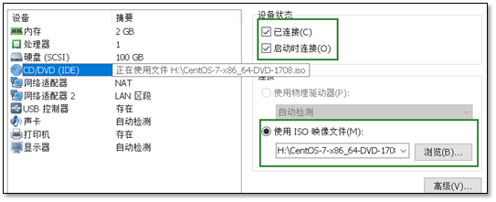
2)挂载上镜像
[root@Cobbler ~]# mount /dev/cdrom /mnt/ mount: /dev/sr0 is write-protected, mounting read-only [root@Cobbler ~]# df -h |grep mnt /dev/sr0 4.3G 4.3G 0 100% /mnt
3)进行导入镜像
选择Import DVD 输入Prefix(文件前缀)，Arch（版本），Breed（品牌），Path(要从什么地方导入)
在导入镜像的时候要注意路径，防止循环导入。
信息配置好后，点击run，即可进行导入。
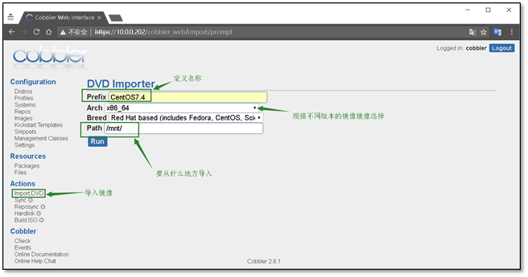
导入过程使用rsync进行导入，三个进程消失表示导入完毕
[root@Cobbler mnt]# ps -ef |grep rsync root 12026 1 0 19:04 ? 00:00:00 /usr/bin/rsync --daemon --no-detach root 13554 11778 12 19:51 ? 00:00:06 rsync -a /mnt/ /var/www/cobbler/ks_mirror/CentOS7.4-x86_64 --progress root 13555 13554 0 19:51 ? 00:00:00 rsync -a /mnt/ /var/www/cobbler/ks_mirror/CentOS7.4-x86_64 --progress root 13556 13555 33 19:51 ? 00:00:17 rsync -a /mnt/ /var/www/cobbler/ks_mirror/CentOS7.4-x86_64 --progress root 13590 10759 0 19:52 pts/1 00:00:00 grep --color=auto rsync
查看日志可以发现右running进程
日志位于 Events
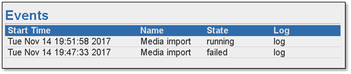
导入完成后生成的文件夹
[root@Cobbler ks_mirror]# pwd /var/www/cobbler/ks_mirror [root@Cobbler ks_mirror]# ls CentOS7.4-x86_64 config
1.3.2 创建一台空白虚拟机，进行测试网路安装
注意：虚拟机的内存不能小于2G,网卡的配置要保证网络互通
启动虚拟机
启动虚拟机即可发现会有cobbler的选择界面

选择CentOS7.4即可进行安装，安装过程与光盘安装一致，这里就不在复述。
1.4 定制化安装操作系统
1.4.1 添加内核参数
1）查看导入的镜像，点击edit
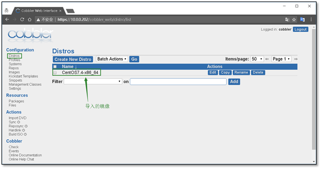
2）在内核参数中添加net.ifnames=0 biosdevname=0
能够让显示的网卡变为eth0 ，而不是CentOS7中的ens33
修改完成后点击保存
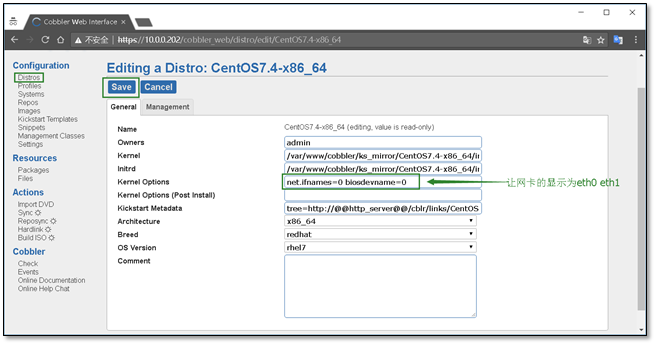
1.4.2 查看镜像属性
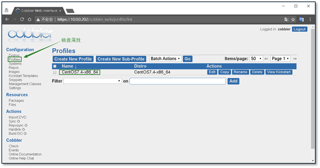
1.4.3 编写ks文件
1)创建新的ks文件
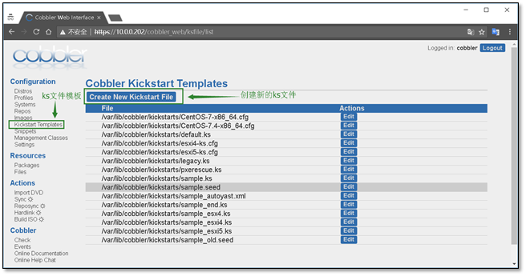
2）添加ks文件，并配置文件名
创建完成后点击Save进行保存
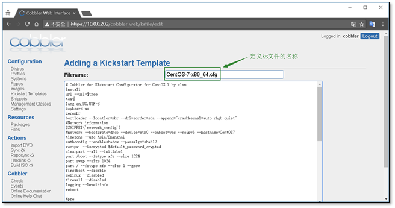
CentOS7 ks配置文件参考
1 # Cobbler for Kickstart Configurator for CentOS 7 by clsn 2 install 3 url --url=$tree 4 text 5 lang en_US.UTF-8 6 keyboard us 7 zerombr 8 bootloader --location=mbr --driveorder=sda --append="crashkernel=auto rhgb quiet" 9 #Network information 10 $SNIPPET('network_config') 11 #network --bootproto=dhcp --device=eth0 --onboot=yes --noipv6 --hostname=CentOS7 12 timezone --utc Asia/Shanghai 13 authconfig --enableshadow --passalgo=sha512 14 rootpw --iscrypted $default_password_crypted 15 clearpart --all --initlabel 16 part /boot --fstype xfs --size 1024 17 part swap --size 1024 18 part / --fstype xfs --size 1 --grow 19 firstboot --disable 20 selinux --disabled 21 firewall --disabled 22 logging --level=info 23 reboot 24 25 %pre 26 $SNIPPET('log_ks_pre') 27 $SNIPPET('kickstart_start') 28 $SNIPPET('pre_install_network_config') 29 # Enable installation monitoring 30 $SNIPPET('pre_anamon') 31 %end 32 33 %packages 34 @^minimal 35 @compat-libraries 36 @core 37 @debugging 38 @development 39 bash-completion 40 chrony 41 dos2unix 42 kexec-tools 43 lrzsz 44 nmap 45 sysstat 46 telnet 47 tree 48 vim 49 wget 50 %end 51 52 %post 53 systemctl disable postfix.service 54 %end
1.4.4 自定义安装系统
1)选择systems 创建一个新的系统
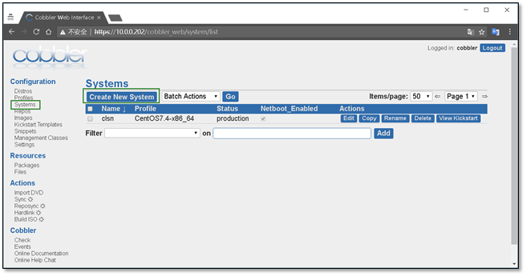
2)定义系统信息
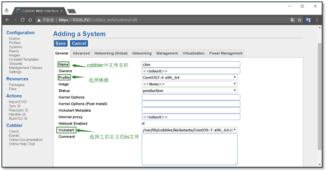
3)配置全局网络信息
主机名、网关、DNS
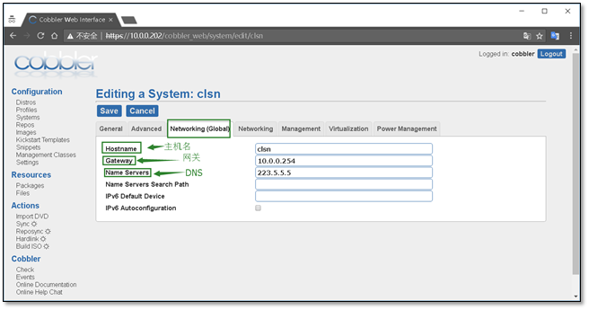
4)配置网卡信息，eth0，eth1
需要注意，选择static静态，
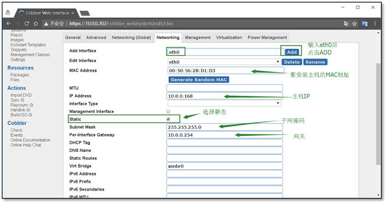
以上的所有配置完成后，点击Save进行保存
附录：
VMware workstation中查看虚拟机mac地址的方法。在虚拟机设置中。
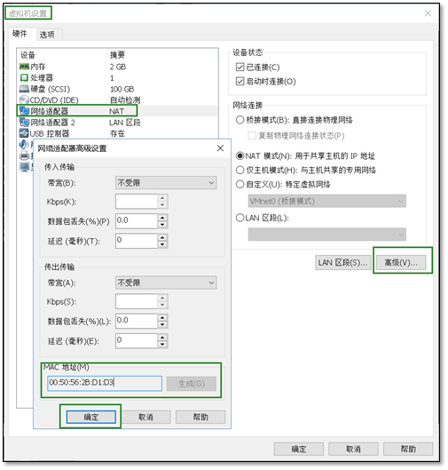
cobbler web 界面说明
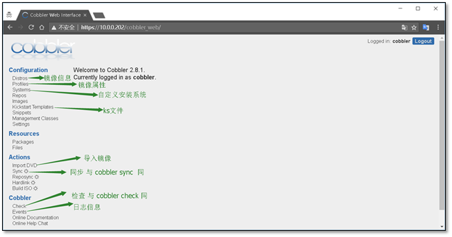
1.5 安装虚拟机
1.5.1 开启虚拟机
如果之前的设置就显示安装进度
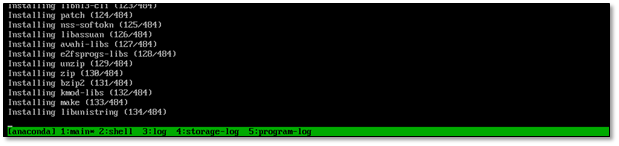
1.5.2 安装完成进行检查
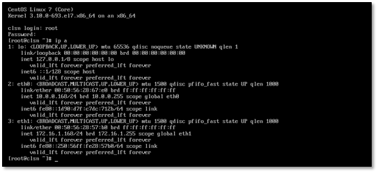
1.6 cobbler使用常见错误
1.6.1 cobbler check报错
[root@Cobbler ~]# cobbler sync Traceback (most recent call last): File "/usr/bin/cobbler", line 36, in <module> sys.exit(app.main()) File "/usr/lib/python2.7/site-packages/cobbler/cli.py", line 662, in main rc = cli.run(sys.argv) File "/usr/lib/python2.7/site-packages/cobbler/cli.py", line 269, in run self.token = self.remote.login("", self.shared_secret) File "/usr/lib64/python2.7/xmlrpclib.py", line 1233, in __call__ return self.__send(self.__name, args) File "/usr/lib64/python2.7/xmlrpclib.py", line 1587, in __request verbose=self.__verbose File "/usr/lib64/python2.7/xmlrpclib.py", line 1273, in request return self.single_request(host, handler, request_body, verbose) File "/usr/lib64/python2.7/xmlrpclib.py", line 1306, in single_request return self.parse_response(response) File "/usr/lib64/python2.7/xmlrpclib.py", line 1482, in parse_response return u.close() File "/usr/lib64/python2.7/xmlrpclib.py", line 794, in close raise Fault(**self._stack[0]) xmlrpclib.Fault: <Fault 1: "<class 'cobbler.cexceptions.CX'>:'login failed'">
解决办法
systemctl restart httpd.service
systemctl restart cobblerd.service
cobbler check
1.6.2 No space left on device

出现这个错误的原因是虚拟机的内存不足2G，
将内存调为2G即可（这个错误只会出现在CentOS7.3之上）
1.7 附录cobbler_CentOS6.x_ks配置文件
# Cobbler for Kickstart Configurator for CentOS 6 by clsn install url --url=$tree text lang en_US.UTF-8 keyboard us zerombr bootloader --location=mbr --driveorder=sda --append="crashkernel=auto rhgb quiet" $SNIPPET('network_config') timezone --utc Asia/Shanghai authconfig --enableshadow --passalgo=sha512 rootpw --iscrypted $default_password_crypted clearpart --all --initlabel part /boot --fstype=ext4 --asprimary --size=200 part swap --size=1024 part / --fstype=ext4 --grow --asprimary --size=200 firstboot --disable selinux --disabled firewall --disabled logging --level=info reboot %pre $SNIPPET('log_ks_pre') $SNIPPET('kickstart_start') $SNIPPET('pre_install_network_config') # Enable installation monitoring $SNIPPET('pre_anamon') %end %packages @base @compat-libraries @debugging @development tree nmap sysstat lrzsz dos2unix telnet %end %post --nochroot $SNIPPET('log_ks_post_nochroot') %end %post $SNIPPET('log_ks_post') # Start yum configuration $yum_config_stanza # End yum configuration $SNIPPET('post_install_kernel_options') $SNIPPET('post_install_network_config') $SNIPPET('func_register_if_enabled') $SNIPPET('download_config_files') $SNIPPET('koan_environment') $SNIPPET('redhat_register') $SNIPPET('cobbler_register') # Enable post-install boot notification $SNIPPET('post_anamon') # Start final steps $SNIPPET('kickstart_done') # End final steps %end
1.8 参考文档
http://blog.oldboyedu.com/autoinstall-cobbler/
http://www.zyops.com/autoinstall-cobbler